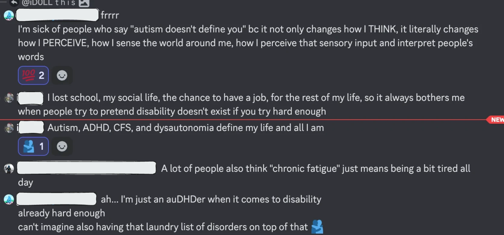

Меня терзают видения боли
Меня терзают видения боли.
В мире есть явный дисбаланс между болью и удовольствием; между страданием и счастьем. Дайте мне час и простые инструменты – и я намного проще смогу причинить нестерпимую боль, нежели блаженное удовольствие. И под угрозой продолжить боль люди ломаются намного легче, чем под угрозой прекратить наслаждение.
В каком-то смысле я знала, что ментальная боль может быть намного хуже физической. Обычно в оценках серьезности физической боли на верхушку ставят кластерные головные боли – они у меня были, и это действительно крайне больно, но несравнимо со страданиями от неправильно работающей головы.
А изучение психиатрии открыло мне окно в новые, доселе мной не представимые уровни страдания. У меня пытка накатывает короткими “приступами”, которые можно перетерпеть. Даже в самой глубокой яме, я хотя бы знаю, что оно так будет не вечно. У многих такой роскоши нет. Мой друг как-то сказал, что я наименее счастливый человек, которого он видел. Я видела куда хуже. Многие заперты в аду.
И они, как правило, невидимы. Психические болезни не очевидны снаружи, редко освещаются в медиа, они менее “понятны” постороннему, чем физические инвалидности. И самое для меня обидное – страдальцы их часто вынуждены скрывать, чтобы не сталкиваться со стигматизацией, что глубже и глубже усугубляет проблему. Поэтому большинство крайне изолировано от всего этого слоя жизни людей.
Слышали ли вы хоть раз мнение, что психически больных надо держать в психбольнице подальше от нормальных людей? А что обычных больных надо держать в обычной больнице? Почему такая разница? Встречали ли вы хоть раз слепого человека? А человека с “раздвоением личности”? Знаете ли вы, как правильно называется это заболевание? Как люди с ним живут? А знали ли вы, что страдающие им встречаются чаще, чем слепые? Если окажется, что ваш собеседник шизофреник – насколько менее всерьез вы будете воспринимать его мнение? Как вы думаете, смогли бы вы понять, если ваш коллега на работе шизофреник? Насколько вы вообще знаете, в чем именно заключается шизофрения?

И “нормисные” источники не очень хорошо показывают суть проблемы. Как правило, они описывают внешние проявления, но не внутренние переживания.
Вот как описывает акатизию Википедия (обратите внимание на предполагаемую причину суицидальных мыслей):
Akathisia is a movement disorder characterized by a subjective feeling of inner restlessness accompanied by mental distress and/or an inability to sit still. Usually, the legs are most prominently affected. Those affected may fidget, rock back and forth, or pace, while some may just have an uneasy feeling in their body. The most severe cases may result in poor adherence to medications, exacerbation of psychiatric symptoms, and, because of this, aggression, violence, and/or suicidal thoughts. Akathisia is also associated with threatening behaviour and physical aggression in mentally disordered patients.
А вот, как ее описывает страдалец:
Idk wtf to do. Sitting feels wrong, standing feels wrong, walking feels wrong, laying down feels wrong, moving my body feels wrong, not moving my body feels wrong, idk what to do with myself and am having insane overwhelming urges to harm myself. my surroundings are surreal from derealization and I have no emotion to try and ground myself with, my entire nervous system is shredded. I have so much pressure in my head I scream. I cant even begin to try and describe what im currently experiencing, but it's fucking unbearable torture. I dont know what to fucking do. I want to end it so fucking bad. There is nothing human left of me, just this empty vessel that is in inexplicable agony. Nothing can help me. I want a safe way out where I don't just end up damaging myself more. I pray every day for some healing and it never comes. I just get worse. I need out.
Если ваша реакция “наверняка драматизирует” – ха ха, нет. Я наступала на эти грабли достаточно. Сначала думаю “драматизирует, это расстройство не может быть настолько плохо”, а потом попадаю в эту же яму и, нет, все так и есть. Это стабильный паттерн, в который попадала не только я, было сложно не заметить. Иногда все просто очень и очень плохо.
Весь этот скрытый слой страдающих людей с серьезными проблемами – такими, что ты бы взвыл, прожив неделю их жизни – взаимодействует, в основном, друг с другом, в закрытых пространствах. Потому что народ не осведомлен, потому что это сразу нарисует на них гигантскую мишень, потому что признаться фашистом меньше повлияет на дружелюбность окружающих или шанс найти работу, чем признаться, что страдаешь шизофренией. Самые нуждающиеся в этом люди не могут получить со стороны сочувствие или поддержку, не говоря уже о, скажем, адаптации к инвалидности. Никто не против надписей шрифтом Брайля или пандусов для колясок, но на просьбу писать список триггеров на обложках книги можно услышать и что ты “хрупкая снежинка и соевая либераха”.
Не стоит думать, что это проблемы других людей. Все это мешает и людям, считающим себя здоровыми – сложнее заметить проблему и начать лечиться, прежде чем станет слишком поздно. И не забудьте о детях. Мои расстройства – результат травмы, и если бы мои родители знали про кПТСР то, что я знаю сейчас, этого абсолютно можно было избежать. Сокрытость проблемы только множит проблему.
Мы используем “голодных африканских детей” как метонимию страдающей группы, о которой периодически надо напоминать, но не замечаем бездонные ямы бесконечного страдания прямо под нашими носами.
Между тем во всех домах и на улицах тишина, спокойствие; из пятидесяти тысяч живущих в городе ни одного, который бы вскрикнул, громко возмутился. Мы видим тех, которые ходят на рынок за провизией, днем едят, ночью спят, которые говорят свою чепуху, женятся, старятся, благодушно тащат на кладбище своих покойников, но мы не видим и не слышим тех, которые страдают, и то, что страшно в жизни, происходит где-то за кулисами. Всё тихо, спокойно, и протестует одна только немая статистика: столько-то с ума сошло, столько-то ведер выпито, столько-то детей погибло от недоедания… И такой порядок, очевидно, нужен; очевидно, счастливый чувствует себя хорошо только потому, что несчастные несут свое бремя молча, и без этого молчания счастье было бы невозможно. Это общий гипноз. Надо, чтобы за дверью каждого довольного, счастливого человека стоял кто-нибудь с молоточком и постоянно напоминал бы стуком, что есть несчастные, что как бы он ни был счастлив, жизнь рано или поздно покажет ему свои когти, стрясется беда –- болезнь, бедность, потери, и его никто не увидит и не услышит, как теперь он не видит и не слышит других. Но человека с молоточком нет, счастливый живет себе, и мелкие житейские заботы волнуют его слегка, как ветер осину, –- и все обстоит благополучно.
– А. П. Чехов “Крыжовник”
Постоянная боль порой переходит в некое духовное, экзистенциальное страдание. Бедняга за беднягой задается одними и теми же вопросами. Неужели все, в этом моя жизнь? Вечная боль и ничего больше? У меня никогда не будет хорошего дня, ни одного проблеска счастья, ничего, от чего я бы чувствовал радость? Все, что остается мне отныне, это пострадать и умереть? Ради чего?
Обычно я читаю такое от страдающих сильной физической хронической болью. Но как страдающая хронической ментальной, я тоже понимаю. Сильная боль это не только плохо – она еще и уничтожает все, что хорошо. Рано или поздно на все номинальные “радости жизни” становится плевать. Они ничего не меняют и не чувствуются. Начинаешь не верить, что хорошее в принципе существует.
В одиночке при ходьбе плечо
следует менять при повороте,
чтоб не зарябило и ещё
чтобы свет от лампочки в пролёте
падал переменно на виски,
чтоб зрачок не чувствовал суженья.
Это не избавит от тоски,
но спасёт от головокруженья.
– Иосиф Бродский, “Инструкция заключенному”
Я не раз слышала фразу “зло это отсуствие добра”, но обратное ближе к истине. Зло очевидно существует. Его можно почувствовать, увидеть, потрогать. Оно проактивно, оно меняет мир, оно приносит страдания. Каждая жертва зла может узнать зло, показать на него пальцем. Да, это зло, никогда его не забуду, вот кто оставил шрамы на моем мозге, которые пытают меня по сей день. Кто видел зло, не забудет, насколько оно реально.
А добро, казалось бы, существует только в той мере, в которой оно уменьшает зло. Вылечить рак – добро, потому что оно избавит нас от зла рака; но в мире, где рака нет, и лечить его не надо. Кормить голодных – добро, потому что есть голод. Бороться за свободу – добро, потому что есть тирания. Злодей плохой, потому что он делает плохо; герой хороший, потому что он побеждает злодея. Героин – одно из высочайших наслаждений, доступных человеку, но, биохимически, это просто очень сильное обезболивающее. Ад это юдоль вечных мук, Рай это место очень далеко от Ада.
Зло очевидно существует. Добро это отсутствие зла.
––-----–—
Я необычно сфокусирована на страданиях людей. Возможно, это мой личный байяс – я страдала в своей жизни очень много. Но, как показывает практика, не так уж и много страданий достаточно, чтобы человек проникся. Некоторые сомневающиеся ставят эксперименты, специально причиняя себе боль – и очень быстро и навсегда радикально меняют свое мнение и соглашаются, что уменьшение страданий это самое важное и срочное, что вообще может быть. И ведь речь в этих экспериментах идет не об экстремальной боли – не о такой боли, что ты лучше умрешь прямо сейчас, чем будешь терпеть еще минуту. Речь идет о такой боли, что ты готов ее терпеть ради нужд эксперимента. О такой, которая длится максимум несколько часов. Мелочь, по сравнению с “настоящими” страданиями в реальном мире.
Я обнаружила пару врат в Ад. Их намного больше. Регулярно некто обнаруживает новые для лично него врата, и этого достаточно, чтобы начать строить всю свою этику вокруг уменьшения страданий. Я лично не знакома со, скажем, Адом детского сексуального рабства или интранаркозного пробуждения; и многие, кто знакомы с оными, не знакомы с Адом душевных болезней. Тем не менее, между всеми, повидавшими Ад, есть некоторая взаимная эмпатия: может, я и не понимаю, о чем ты говоришь, но я понимаю, что ты хочешь сказать.
Если идея этики, основанной на уменьшении страданий, не кажется вам потенциально важной – то благодарите Бога, что он ни разу не окунул вас в Ад. И, наверное, не надо туда копать.
Wolmer: Врешь тогда. Ну или ты должна постоянно находится в глубочайшей депрессии из-за эмпатии к вроде бы 500 миллионам людей в абсолютной бедности
Alien: Vro she literally is.
Wolmer: Но точно не по этой причине
В каком-то смысле Волмер прав: я в депрессии была и до своего первого взгляда в Ад. Но он точно не сделал лучше. Этот пост – не рекомендация ознакомиться с Адом, это просто мой звон колокольчика: знайте, что такое есть, и поймите, откуда растет моя этика.
Но я не герой, и не все могут быть героями. Последние годы моей жизни основное мое чувство это усталость, и сейчас я пытаюсь хотя бы отдыхать не медленнее, чем уставать. Я мало что могу сделать; а просто ворошить в уме мысли о зле только расходует мой ресурс. Я пытаюсь абстрагироваться от существования Ада, и абсолютно понимаю тех, кто не хочет стоять перед этой дилеммой.
Я не могу быть героем ни эмоционально, ни физически. Насколько бы я ни хотела равняться на Литтлпип, которая готова кинуть себя в пасть тьмы ради шанса закрыть очередные врата Ада, не надеясь на награду – де факто мои приоритеты намного более эгоистичные, и я скорее спасусь из Ада сама, чем внесу лепту в его разрушение.
Но меня терзают видения боли.